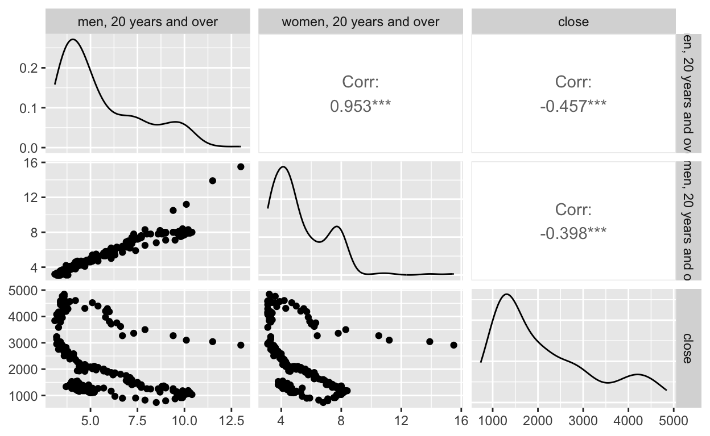
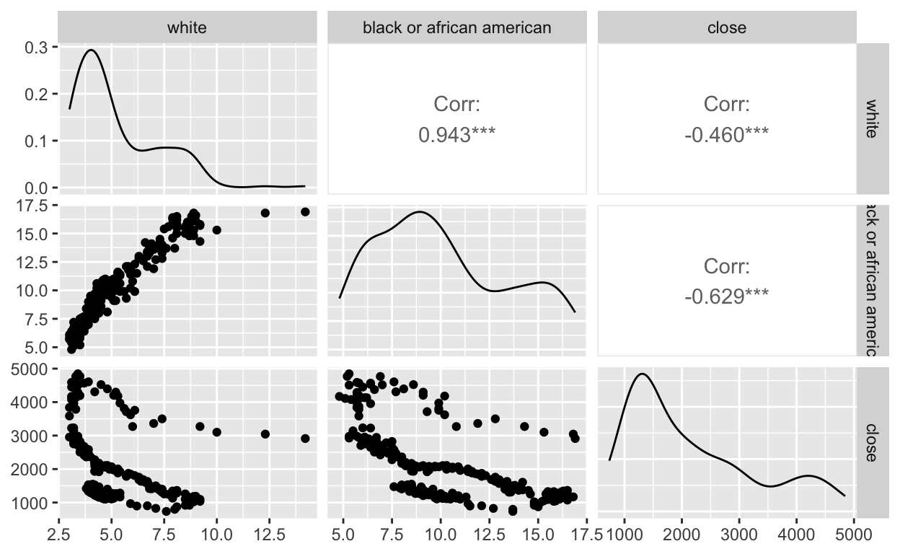
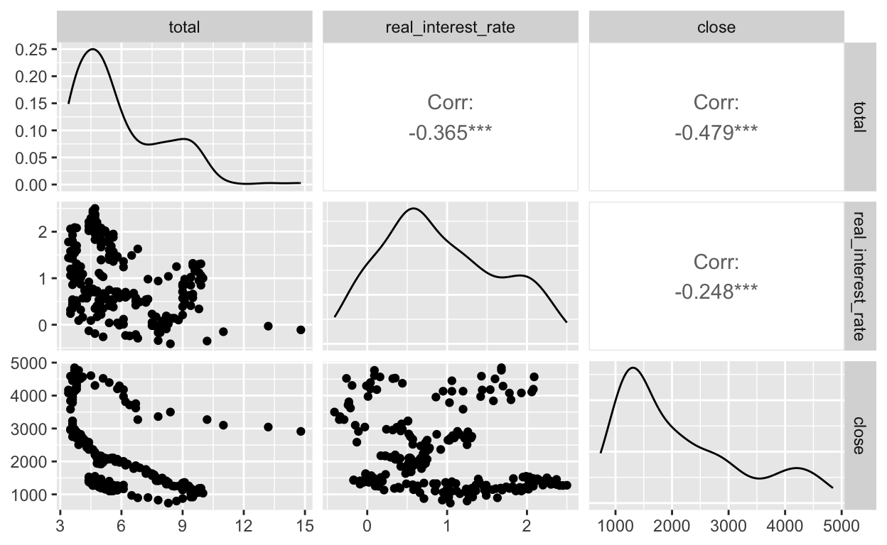
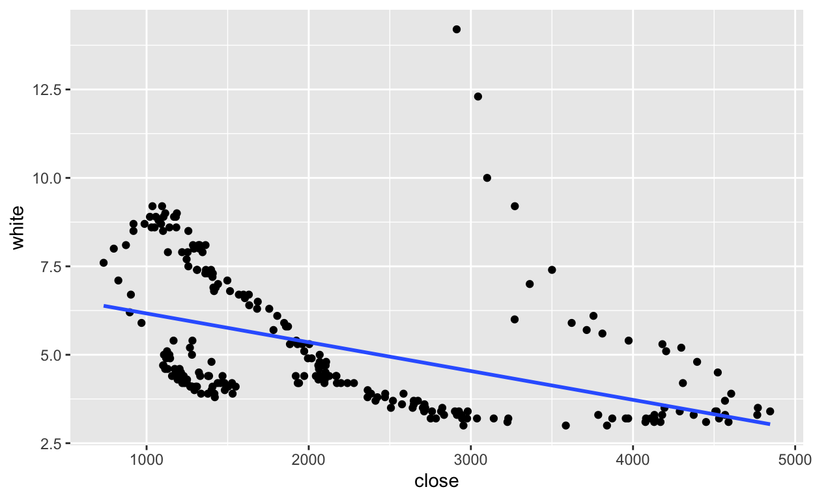
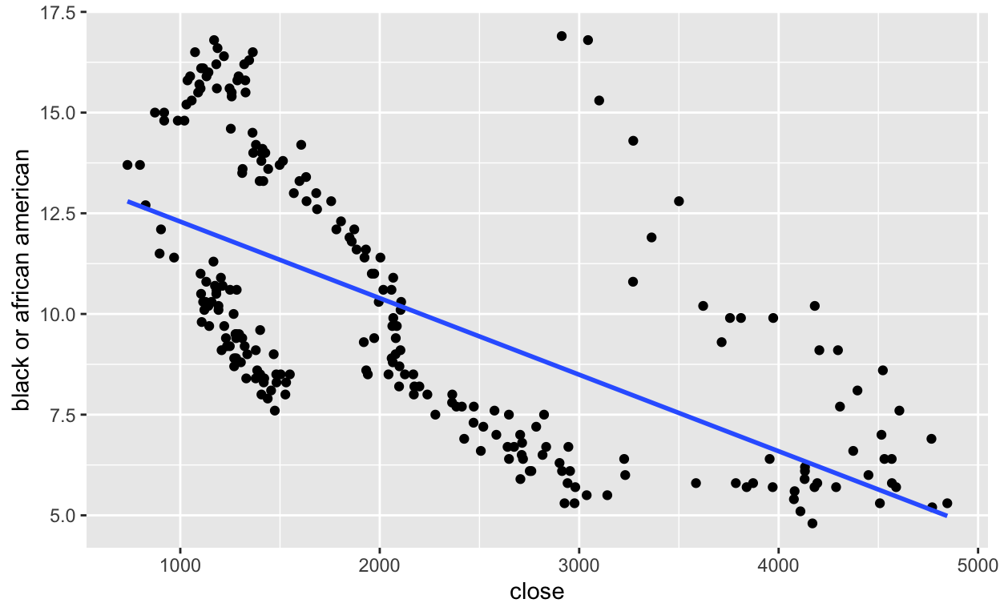
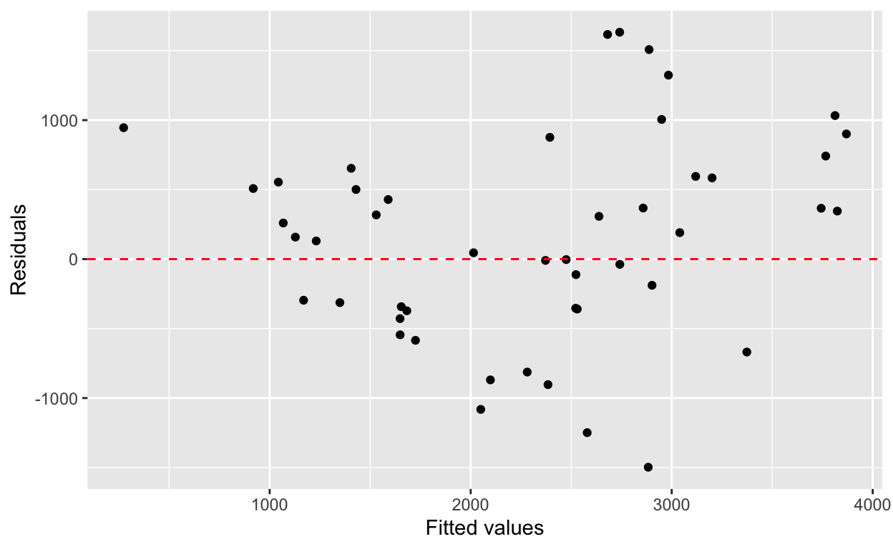

This project will look to show some of the techniques I learned while taking a Statistical Modeling and Regression class were we learned how to build and assess regression models.
This semester (winter ’24) I took a Statistical Modeling and Regression class were we learned how to build and assess regression models. Having taken 2 stats classes before this, I didn’t know what to expect from this class. Needless to say I didn’t know that much about building regression models. To conclude the semester, we had an opportunity to showcase what we had learned over the course of this semester. Therefore, this project will aim to create a regression and assess how fit the model is. To do that, I will look at how unemployment and potentially interest rates have affected the Standard & Poor’s 500 (S&P500) index, a stock market index that tracks the performance of the 500 largest companies that are listed on the United States stock exchange.
One would assume that as unemployment rates increase, less money circulates which leads to people hording money. For those who have stocks, some might be forced to sell some of their stocks to generate income. On the other hand, interest rates also play a part in how the stock market moves. As interest rates increase, share prices fall because companies are not willing to borrow money at a premium. While I will aim to explore the relationship (using the R software package) between unemployment and interest rates with the S&P500, the steps I will take to reach that destination will also aim to satisfy the following course objectives:
Describe probability as a foundation of statistical modeling, including inference and maximum likelihood estimation
Determine and apply the appropriate generalized linear model for a specific data context
Conduct model selection for a set of candidate models
Communicate the results of statistical models to a general audience
Use programming software (i.e., R) to fit and assess statistical models
To satisfy these objectives, I will be analyzing the impact of unemployment rate on the S&P 500 and this analysis will be done in R.
Describe probability as a foundation of statistical modeling, including inference and maximum likelihood estimation
Linear regression is a technique that allows us to create a model that predicts the value of unknown data by using values that are already known. In this case, I have collected data on the unemployment rate, the stock prices and interest rate. The model will be built using this data and in turn the data will be used to predict (probability) what will happen to stock prices if unemployment changes and vice versa.
For this analysis, I will join three separate datasets, real interest rate, unemployment data, and the S&P 500 data. The real interest rate dataset was obtained from https://fred.stlouisfed.org/series/REAINTRATREARAT10Y and it spans over a 30 year period. The unemployment data was obtained from https://www.bls.gov/charts/employment-situation/civilian-unemployment-rate.htm and it spans over a 20 year period. For the stock data I narrowed it down to the S&P 500, since its an index fund it contains stocks from various industries and sectors of business. That data spanned over 20 years.
Joining Data
To join the three datasets mentioned above, I used ‘date’ as the key since it was the only common variable among all three datasets. This process generated the stockData dataset that contains all three datasets.
To get a summary statistic of stockData to understand the nature of the data.
date total men, 20 years and over
Length:241 Min. : 3.400 Min. : 3.100
Class :character 1st Qu.: 4.400 1st Qu.: 3.900
Mode :character Median : 5.100 Median : 4.700
Mean : 5.876 Mean : 5.553
3rd Qu.: 7.300 3rd Qu.: 7.000
Max. :14.800 Max. :13.000
women, 20 years and over 16 to 19 years old white
Min. : 3.100 Min. : 9.30 Min. : 3.000
1st Qu.: 3.900 1st Qu.:13.20 1st Qu.: 3.800
Median : 4.600 Median :16.10 Median : 4.400
Mean : 5.229 Mean :17.37 Mean : 5.216
3rd Qu.: 6.400 3rd Qu.:21.30 3rd Qu.: 6.600
Max. :15.500 Max. :32.80 Max. :14.200
black or african american asian hispanic or latino
Min. : 4.80 Min. : 2.000 Min. : 3.90
1st Qu.: 7.50 1st Qu.: 3.100 1st Qu.: 5.00
Median : 9.40 Median : 3.900 Median : 6.30
Mean :10.07 Mean : 4.617 Mean : 7.33
3rd Qu.:12.80 3rd Qu.: 5.700 3rd Qu.: 9.20
Max. :16.90 Max. :15.000 Max. :18.90
open high low close
Min. : 729.6 Min. : 833 Min. : 666.8 Min. : 735.1
1st Qu.:1275.0 1st Qu.:1303 1st Qu.:1246.4 1st Qu.:1279.2
Median :1826.2 Median :1859 Median :1769.2 Median :1853.9
Mean :2146.3 Mean :2218 Mean :2072.8 Mean :2160.1
3rd Qu.:2802.8 3rd Qu.:2922 3rd Qu.:2693.7 3rd Qu.:2818.2
Max. :4778.1 Max. :4931 Max. :4682.1 Max. :4845.6
NA's :1 NA's :1 NA's :1 NA's :1
adj close volume real_interest_rate
Min. : 735.1 Min. :2.659e+10 Min. :-0.4100
1st Qu.:1279.2 1st Qu.:6.669e+10 1st Qu.: 0.4100
Median :1853.9 Median :7.815e+10 Median : 0.7700
Mean :2160.1 Mean :7.859e+10 Mean : 0.9271
3rd Qu.:2818.2 3rd Qu.:8.952e+10 3rd Qu.: 1.4550
Max. :4845.6 Max. :1.622e+11 Max. : 2.5000
NA's :1 NA's :1 NA's :1 Firstly, I will visualize the distribution of the variables of interest to see their distribution across time. Since I am mainly interested the ethnic variables especially white Americans and black or african american, the plots below will have the date as the x variable (independent) and the respective demographic will be the y variable (dependent).
However, for the analysis that comes after that, I will be exploring the relationship between the closing price of the S&P 500 and other variables such as the unemployment rate of African Americans and the unemployment rate of women 20 years and older.
Multiple Linear Regression
When it comes to multiple linear regression, there are several assumptions about the data. One of the most common ones is linear relationship. we expected our data to have a linear relationship (correlation), in other words, the closing price and the unemployment rate need to move in a straight line whether negatively or positively.
Below are some graphs that visualize the relationship between the closing price variable and other variables.
Relationship between close price and the unemployment rate of men and women over 20 years

Plot Results: As highlighted by the negative “Corr:” score, there is negative correlation between the age variables with the close price variable. In other words, when close price goes up, unemployment decreases and vice versa when close prices goes down.
Relationship between close price and the unemployment rate of certain demographics

Plot Results: As highlighted by the negative “Corr:” score, there is negative correlation between the demographics variables with the close price variable. In other words, although not definitive, when close price goes up, unemployment for both White Americans and African Americans decreases and vice versa when close prices goes down.
Relationship between close price and total unemployment and real interest rate

Plot Results: As highlighted by the negative “Corr:” score, there is negative correlation between the dependent variables with the close price variable.
Example
To highlight the negative correlation, the plot below has a line that shows how the points are plotted on the graph, highlighting how there is negative correction.


Another way we can calculate the correlation between vectors or variables is by using the cor() function which serves the same purpose as the graphs/plots above.
[1] -0.4788138[1] -0.6287374[1] -0.4602143Determine and apply the appropriate generalized linear model for a specific data context
For this analysis, I am interested to see if there are specific factors (mentioned at the beginning of this report) that affect the close price of the S&P 500. Since unemployment can be broken up by different demographics including age and ethnicity, I will mainly focus on enthnicity to see whether we need a multiple linear model or a single linear model.
Using parsnip to create specific linear model
Linear Regression Model Specification (regression)
Computational engine: lm Use programming software (i.e., R) to fit and assess statistical models
This multiple linear model (mlr) will look at total unemployment and real_interest_rate
# A tibble: 3 × 5
term estimate std.error statistic p.value
<chr> <dbl> <dbl> <dbl> <dbl>
1 (Intercept) 4867. 208. 23.5 1.07e-63
2 total -344. 27.4 -12.5 5.92e-28
3 real_interest_rate -739. 79.5 -9.29 1.00e-17Results: If total or real_interest_rate are at 0 then the mean close would be 4867 (intercept estimate). In addition, for every 1 unit increase in total, close will decrease by -343.69; whereas a 1 unit increase in total will decrease close by -738.8.
This model will look at the age variables.
# A tibble: 4 × 5
term estimate std.error statistic p.value
<chr> <dbl> <dbl> <dbl> <dbl>
1 (Intercept) 5222. 162. 32.2 2.44e-88
2 `men, 20 years and over` 151. 70.7 2.14 3.32e- 2
3 `women, 20 years and over` 400. 72.2 5.54 8.21e- 8
4 `16 to 19 years old` -345. 19.4 -17.8 1.35e-45Results: If men, 20 years and over, women, 20 years and over or 16 to 19 years old are at 0 then the mean close would be 5222.2 (intercept estimate).
For 1 unit increase in men, 20 years and over, close will increase by 151.4
For 1 unit increase in women, 20 years and over, close will increase by 399.96
For 1 unit increase in 16 to 19 years old, close will decrease by -344.9
This model will look at the ethnicity variables.
# A tibble: 4 × 5
term estimate std.error statistic p.value
<chr> <dbl> <dbl> <dbl> <dbl>
1 (Intercept) 4669. 163. 28.6 1.52e-78
2 white 72.2 220. 0.329 7.42e- 1
3 `black or african american` -605. 43.1 -14.0 6.39e-33
4 `hispanic or latino` 438. 150. 2.93 3.74e- 3Results: If white, black or african american or hispanic or latino are at 0 then the mean close would be 4668.84 (intercept estimate).
For 1 unit increase in white, close will increase by 72.2
For 1 unit increase in black or african american, close will decrease by -605.07
For 1 unit increase in hispanic or latino, close will increase by 438.44
This model excludes the hispanic or latino variable.
# A tibble: 3 × 5
term estimate std.error statistic p.value
<chr> <dbl> <dbl> <dbl> <dbl>
1 (Intercept) 4493. 154. 29.1 3.50e-80
2 white 679. 73.7 9.21 1.73e-17
3 `black or african american` -583. 43.1 -13.5 3.11e-31If white or black or african american are at 0 then the mean close would be 4492.86 (intercept estimate).
For 1 unit increase in white, close will increase by 679.0
For 1 unit increase in black or african american, close will decrease by -582.84
To assess the goodness of fit of our models, we use the glance() function. Basically, this function tell us how good our model is by giving the model a “score.” Unfortunately, there is no ideal “score” but the closer we get to one the better our model. Below I shall interpret the results of each model by looking at the r.squared value.
# A tibble: 1 × 12
r.squared adj.r.squared sigma statistic p.value df logLik AIC
<dbl> <dbl> <dbl> <dbl> <dbl> <dbl> <dbl> <dbl>
1 0.435 0.430 832. 91.3 4.02e-30 2 -1953. 3914.
# ℹ 4 more variables: BIC <dbl>, deviance <dbl>, df.residual <int>,
# nobs <int>Results: This model looks at total unemployment rate and real interest rate. Looking at the r.squared value, it is hard to say this is a good model.
# A tibble: 1 × 12
r.squared adj.r.squared sigma statistic p.value df logLik AIC
<dbl> <dbl> <dbl> <dbl> <dbl> <dbl> <dbl> <dbl>
1 0.670 0.665 638. 159. 1.80e-56 3 -1888. 3787.
# ℹ 4 more variables: BIC <dbl>, deviance <dbl>, df.residual <int>,
# nobs <int>Results: This model is built using at the age variables and it seems to perform better that the model
Below are the results I am most interested in. Interestingly, the model that included the Hispanic or Latino ethnicity has a better r.squared result as compared to the model that excluded that ethnicity.
# A tibble: 1 × 12
r.squared adj.r.squared sigma statistic p.value df logLik AIC
<dbl> <dbl> <dbl> <dbl> <dbl> <dbl> <dbl> <dbl>
1 0.570 0.565 727. 104. 4.66e-43 3 -1920. 3850.
# ℹ 4 more variables: BIC <dbl>, deviance <dbl>, df.residual <int>,
# nobs <int># A tibble: 1 × 12
r.squared adj.r.squared sigma statistic p.value df logLik AIC
<dbl> <dbl> <dbl> <dbl> <dbl> <dbl> <dbl> <dbl>
1 0.555 0.551 739. 148. 2.25e-42 2 -1924. 3856.
# ℹ 4 more variables: BIC <dbl>, deviance <dbl>, df.residual <int>,
# nobs <int>Since the model above did not perform as well as I hoped they will, I will go a step further and generated simple linear models for the white ethnicity and the black or african american ethnicity to see how they will perform individually.
# A tibble: 2 × 5
term estimate std.error statistic p.value
<chr> <dbl> <dbl> <dbl> <dbl>
1 (Intercept) 4258. 177. 24.0 1.29e-65
2 `black or african american` -208. 16.7 -12.5 8.21e-28# A tibble: 1 × 12
r.squared adj.r.squared sigma statistic p.value df logLik AIC
<dbl> <dbl> <dbl> <dbl> <dbl> <dbl> <dbl> <dbl>
1 0.395 0.393 859. 156. 8.21e-28 1 -1961. 3928.
# ℹ 4 more variables: BIC <dbl>, deviance <dbl>, df.residual <int>,
# nobs <int># A tibble: 2 × 5
term estimate std.error statistic p.value
<chr> <dbl> <dbl> <dbl> <dbl>
1 (Intercept) 3519. 181. 19.4 6.15e-51
2 white -260. 32.5 -8.00 5.54e-14# A tibble: 1 × 12
r.squared adj.r.squared sigma statistic p.value df logLik AIC
<dbl> <dbl> <dbl> <dbl> <dbl> <dbl> <dbl> <dbl>
1 0.212 0.208 981. 64.0 5.54e-14 1 -1993. 3992.
# ℹ 4 more variables: BIC <dbl>, deviance <dbl>, df.residual <int>,
# nobs <int>Interestingly, both simple linear models have r.squared values that are lower than the both the multiple linear models that preceded them.
Conduct model selection for a set of candidate models
This part will aim to:
To choose my final model, I will work through the test/train process of fitting and assessing the models.
# A tibble: 192 × 16
date total `men, 20 years and over` `women, 20 years and over`
<chr> <dbl> <dbl> <dbl>
1 1/7/07 4.7 4.2 4.2
2 1/8/21 5.1 5.1 4.7
3 1/4/17 4.4 3.9 4.1
4 1/5/22 3.6 3.4 3.4
5 1/8/12 8.1 7.6 7.3
6 1/3/20 4.4 4.1 4
7 1/4/05 5.2 4.4 4.6
8 1/3/22 3.6 3.4 3.4
9 1/11/13 6.9 6.6 6.2
10 1/5/15 5.6 5.2 5.1
# ℹ 182 more rows
# ℹ 12 more variables: `16 to 19 years old` <dbl>, white <dbl>,
# `black or african american` <dbl>, asian <dbl>,
# `hispanic or latino` <dbl>, open <dbl>, high <dbl>, low <dbl>,
# close <dbl>, `adj close` <dbl>, volume <dbl>,
# real_interest_rate <dbl>To choose a model between the different ethnic models I had, I decided to go with the model that had the highest r.squared value which was the model with all three ethnic variables. I made this decision because everytime I removed a variable, the r.squared value kept on decreasing (model performance was not improving).
# A tibble: 4 × 5
term estimate std.error statistic p.value
<chr> <dbl> <dbl> <dbl> <dbl>
1 (Intercept) 4566. 190. 24.0 3.02e-59
2 white -10.1 241. -0.0419 9.67e- 1
3 `black or african american` -575. 48.0 -12.0 6.49e-25
4 `hispanic or latino` 465. 168. 2.77 6.09e- 3# A tibble: 1 × 12
r.squared adj.r.squared sigma statistic p.value df logLik AIC
<dbl> <dbl> <dbl> <dbl> <dbl> <dbl> <dbl> <dbl>
1 0.537 0.530 725. 72.7 2.86e-31 3 -1535. 3080.
# ℹ 4 more variables: BIC <dbl>, deviance <dbl>, df.residual <int>,
# nobs <int># A tibble: 49 × 18
.pred .resid date total `men, 20 years and over`
<dbl> <dbl> <chr> <dbl> <dbl>
1 1725. -584. 1/6/04 5.6 5.1
2 1649. -545. 1/8/04 5.4 5
3 1649. -428. 1/8/05 4.9 4.3
4 2098. -869. 1/9/05 5 4.5
5 1682. -372. 1/4/06 4.7 4.2
6 2385. -903. 1/11/07 4.7 4.2
7 2281. -813. 1/12/07 5 4.4
8 2580. -1249. 1/2/08 4.9 4.4
9 2883. -1498. 1/4/08 5 4.6
10 2050. -1081. 1/10/08 6.5 6.3
# ℹ 39 more rows
# ℹ 13 more variables: `women, 20 years and over` <dbl>,
# `16 to 19 years old` <dbl>, white <dbl>,
# `black or african american` <dbl>, asian <dbl>,
# `hispanic or latino` <dbl>, open <dbl>, high <dbl>, low <dbl>,
# close <dbl>, `adj close` <dbl>, volume <dbl>,
# real_interest_rate <dbl>Communicate the results of statistical models to a general audience
Results: Since the .resid (residual) values are negative, it means the predicted value is too high. This result makes it difficult to justify how accurate our model is. However, the plot below show random distribution between the predicted values and the residuals which means they are linear appropriate.

In summation, there are a few things I can improve on which are highlighted by this project. It was hard to state how accurate my model was mainly due to the lack of data to create the model. My stockData was over a 20 year period, which is not enough if we want to have a good model. Without industry knowledge, it’s hard to know what a good r.squared value is hence I just went with the one closer to 1. In addition, I still need to work on how to interpret the results of a test-train process. Overall, as I reflect on this process, I have learned a lot more about models than I ever thought I could.
The goal of this analysis was to satisfy the following objectives and I will state how I satisfied the objective:
Describe probability as a foundation of statistical modeling, including inference and maximum likelihood estimation. I did this in the beginning of the Analysis section by defining what linear regression is. When it comes to modeling, the goal is to build a model that can predict a certain outcome. This prediction relies on probability which is derived from the historical data used to create the model.
Determine and apply the appropriate generalized linear model for a specific data context. Since unemployment can be broken up in various ways, I was curious to see how each ethnicity affects the stock prices. In this context, I ended up having both simple linear models and multiple linear models because the unemployment data was broken up into different demographics, hence I could build a model from one variable or multiple ones.
Conduct model selection for a set of candidate models. To perform this, I built different models and using the various demographic variables that I had along with total unemployment rate and interest rate. Once I had all the models, I used the glance() function to get the r.squared values of the models. From here I chose the ethnic model with the highest r.squared value because that is what I was interest in investigating.
Communicate the results of statistical models to a general audience. I communicated the results whenever I could. From talking about the distribution of the histograms to interpreting correlation results, I believed I was able to communicate results to a general audience.
Use programming software (i.e., R) to fit and assess statistical models. This was satisfied by this whole processes. By doing this project in R, I was able to use R to fit and assess statistical models using the test-train process and the glance() function as well.